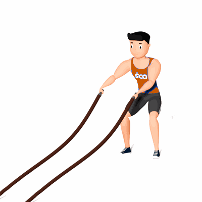

Rotação dos Ombros com Corda Naval

O exercício auxilia na estabilidade e a produção de força do core. Também ajuda na construção de resistência dos membros superiores.
Ficha Técnica
Tipo: CrossFit
Grupo Muscular: Corpo
Aparelho: Nenhum
Músculos: Nenhum
Como realizar
- Em pé, com os pés afastados e próximos à largura dos ombros, mantenha os joelhos semiflexionados e o tronco ligeiramente inclinado à frente;
- Segure cada extremidade da corda com uma das mãos;
- Inicie o exercício desenhando círculos com um braço no sentido horário e outro no no sentido anti-horário.
 RC STORE
RC STORE